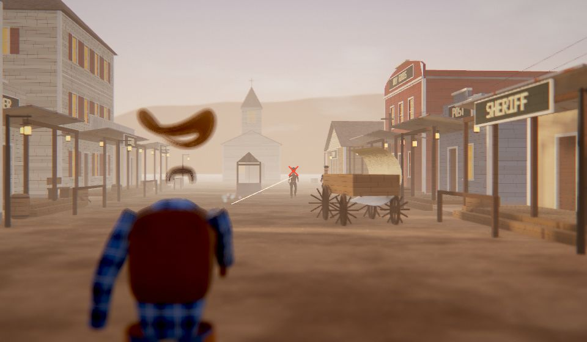
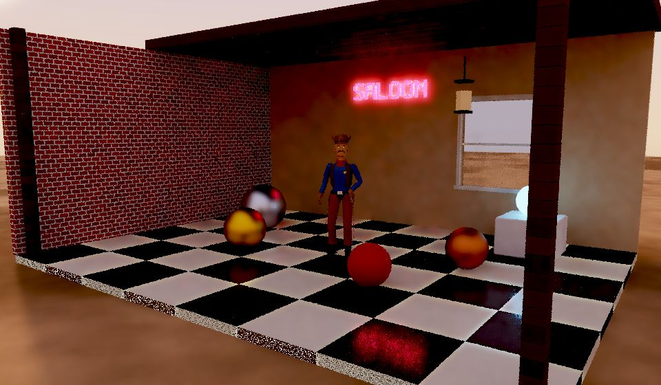
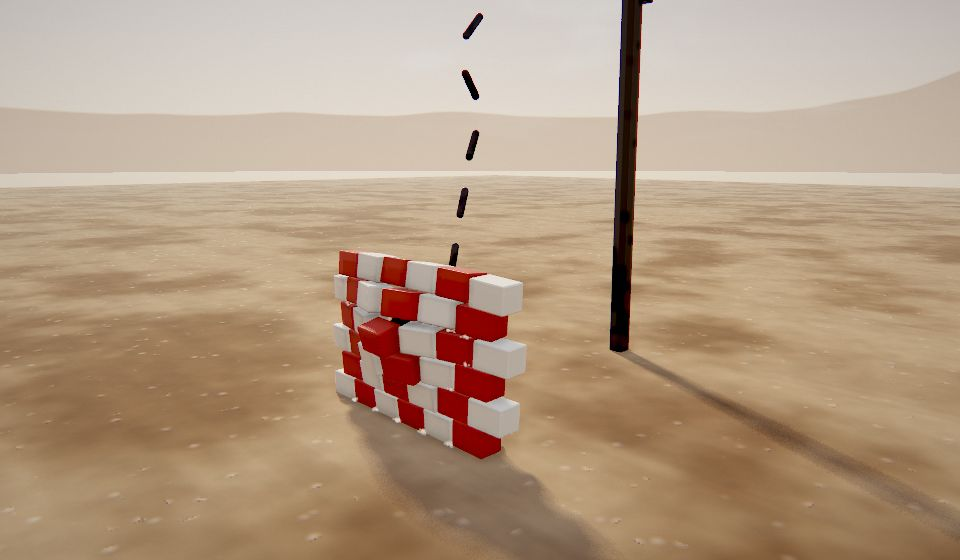
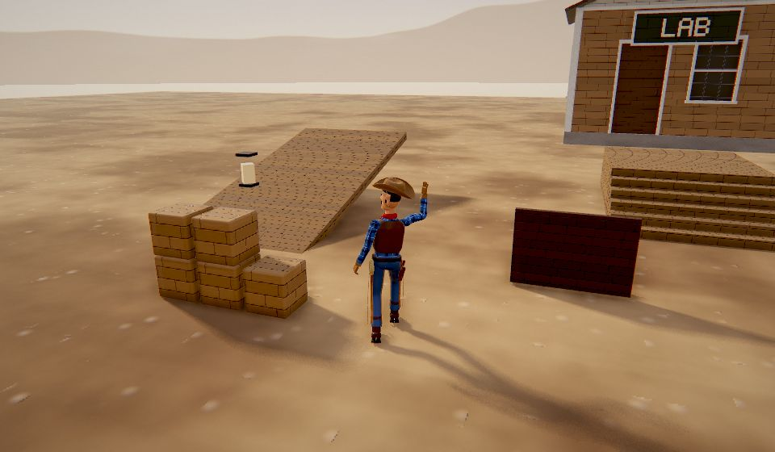
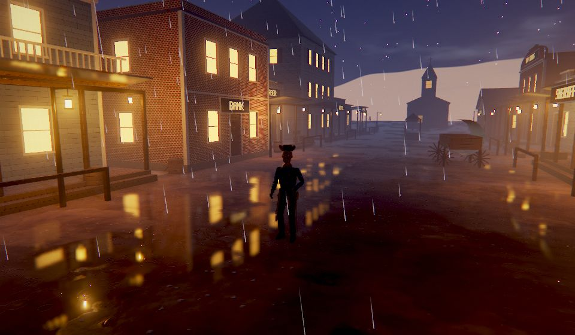

Three tools, one engine
The Studio edits, the Viewer previews, and games load the same JSON the Studio saves. Nothing is baked into a mesh file, so every part stays a live shape you can reshape later.
The Cowboy
Modelled entirely from primitives and modifiers: a lathed hat with a bent brim, a superquadric torso under an open leather vest, tube-swept sleeves and chaps, a star badge, spurs with rowels, and a handlebar mustache swept along a spline.
- Parts
- —
- Bones
- —
- Triangles
- —
- Materials
- —
| Clip | Length | Speed | Keyed channels | How it was made |
|---|
The Grinner
A 2.5 m, gaunt yellow creature on the same humanoid rig: an egg-shaped skull, sunken eye sockets, an ear-to-ear grin made from arrayed, mirrored and bent teeth, exposed ribs, and clawed fingers on arms that hang past its knees. Its quirks (head lolls, twitches, flexing claws) are layered onto synthesized cycles.
| Clip | Length | Speed | Keyed channels | How it was made |
|---|
M1 Garand, first person
A US infantryman's arms in an M1941 field jacket, with an A-11 watch on the left wrist, holding an M1 Garand built from shapes: a walnut stock, a parkerized receiver, and a moving operating rod and bolt. The en-bloc clip holds eight .30-06 rounds. Open it in the Viewer's first-person mode and press F to fire, R to reload and I to inspect.
| Action | Length | What happens |
|---|
| Fire | 1.00 s | Last round: muzzle flash and recoil, the action cycles and locks open, the empty clip pings out |
| Reload | 3.00 s | Rifle canted, a fresh clip from the belt, the thumb presses it home, the bolt slams forward, the hand snaps clear, the heel of the hand slaps the op rod |
| Inspect | 4.40 s | Turns the rifle to the right side, pulls the op rod back to check the chamber, lets it go, then shows the left side |
| Idle | 3.00 s | Breathing sway, the support hand resettling its grip |
V3: ray tracing, physics and a real animation graph
V3 adds a path tracer that runs on the same scenes as the real-time renderer, a physics engine with ragdolls, and the animation tools a game needs: layers, blend spaces, state machines and IK. The real-time renderer picked up reflections, volumetric light, soft shadows and weather.
- GPU path tracerA BVH over every triangle, GGX and glass, sun and lamps sampled directly, denoised while it converges
- Reflections and volumetricsScreen-space reflections, sun shafts through shadow, lamp halos and spot-light beams
- Soft and contact shadowsPCSS penumbras that widen with distance, plus crisp screen-space contact shadows
- RainWet, glossy surfaces, puddles that mirror the street and ripples where the drops land
- Rigid-body physicsBoxes, spheres, capsules, stacking, friction, sleeping, raycasts and impact events
- Joints and ragdollsHinges, cones, ropes, springs and welds. Characters go limp when hit and blend back up
- Animation graphMasked and additive layers, 2D blend spaces, a state machine with triggers and exit times
- Procedural motionFoot IK on stairs, look-at, leaning into turns, spring hit reactions and tweens

Showdown Play ↗
The Sheriff's Colt: draw, aim, fan six shots and reload. Shatter bottles at the range or hold the street against three waves of outlaws.

Ray Tracing Open ↗
A golden-hour gallery, path traced on your GPU. Compare it side by side with the real-time renderer, add depth of field, and pose the Cowboy.

Physics Playground Play ↗
Towers, dominoes, a wrecking ball, a rope bridge, Newton's cradle and ragdoll Cowboys. Drag, shoot and blow things up.

Animation Lab Play ↗
Run, strafe and jump on a state machine. Wave or draw while walking, get hit, climb stairs with foot IK, and watch every weight live.

Frontier Town in the rain Play ↗
Switch on the rain: the street turns into a mirror of lamps and lit windows while the Grinner hunts.
V2: light, weather and buildings
Version 2 turns the character engine into a world engine. Scenes now have a clock, local lights, ambient occlusion and a kit for putting up whole towns, and the new examples show each part.
- Point and spot lights16 per frame, nearest first, with range falloff and lantern flicker
- Time of dayOne number drives the sun, moon, stars, sky, fog, exposure and light shafts
- Ambient occlusionHalf-resolution SSAO with a depth-aware blur, so corners and contact points darken
- Height fog and light shaftsDust that settles into the street and sun rays through gaps at dawn and dusk
- Architecture kitWalls with framed windows and doors, porches, balconies, false fronts, gable and hip roofs, and 3D sign lettering
- Props and structuresWater tower, windmill, wagon, well, bridge, stairs, fences, telegraph line, crates and barrels
- PerformanceInstanced meshes, static batching per material and frustum culling. The town is about 200 draw calls
- Collision2D box colliders with circle push-out, so characters walk around buildings
Use it in a game
No build step and no dependencies. Import the engine as ES modules and load a character the Studio saved.
import { Renderer, Scene, Camera, Character, runLoop } from './src/engine/index.js';
const renderer = new Renderer(document.querySelector('canvas'));
const scene = new Scene(), camera = new Camera();
const cowboy = await Character.fromURL('assets/cowboy.json');
scene.add(cowboy);
cowboy.play('Walk'); // crossfades from whatever was playing
runLoop((dt) => {
if (keys.shift) cowboy.play('Run', { fade: 0.3 }); // feet stay in step (sync group)
cowboy.update(dt);
renderer.render(scene, camera);
});
V2 adds a world around the character: a clock, lights and buildings.
import * as E from './src/engine/index.js';
const palette = E.archPalette(); // shared materials: siding, brick, tin, glass…
const saloon = E.building(new E.Kit(palette), { floors: 2, roof: 'falseFront', door: 'batwing', sign: 'SALOON' }).toNode();
scene.add(saloon);
const lamp = new E.Light('point', { color: '#ffb266', range: 9, flicker: 0.3 });
scene.add(lamp);
runLoop((dt) => {
E.applyTimeOfDay(scene.environment, hours += dt / 60); // sun, moon, sky, fog, light shafts
E.setNightLights(palette, scene.environment.night); // windows glow after dark
lamp.intensity = 10 * scene.environment.night;
renderer.render(scene, camera, { background: 'sky' });
});